María Lasa, PhD
👩🏻💻 Political (Data) Scientist: Ciencia Política + Ciencia de Datos.
🎓 MPP, University of Oxford. PhD, Università di Camerino.
📚 Autora de "País de vinalón: mi viaje a Corea del Norte".
👩🏻💻 Political (Data) Scientist: Ciencia Política + Ciencia de Datos.
🎓 MPP, University of Oxford. PhD, Università di Camerino.
📚 Autora de "País de vinalón: mi viaje a Corea del Norte".
Recorrido académico y profesional
María de los Ángeles Lasa (1986) es Licenciada en Relaciones Internacionales por la Universidad Católica de Córdoba (AR), Magister en Políticas Públicas por la Universidad de Oxford (GB) y Doctora en Ciencia Política por la Universidad de Camerino (IT), con especializaciones en Ciencias Sociales Computacionales, Big Data e Inteligencia Geoespacial.
Ha trabajado en el sector público argentino, en organismos internacionales y para organizaciones de la sociedad civil. Fue Investigadora Visitante en la Universidad de Texas en Austin (US) y en la Universidad de Los Andes (CO), y Profesora Invitada en la Universidad Torcuato Di Tella (AR). Se desempeña actualmente como docente universitaria en la Universidad Comunera (PY) y en la Universidad de San Andrés (AR), como Investigadora Asociada en la Universidad Nacional de La Plata (AR), y lidera el área técnica del Laboratorio de Datos del Global Fund for Women.
En 2024 publicó su primer libro, País de vinalón: mi viaje a Corea del Norte (Fundación CADAL), reeditado en 2025 por Editorial EDUVIM, donde figuró entre los cinco títulos más vendidos del año.
Ha sido oradora TEDx en la Universidad Católica de Córdoba y en la Biblioteca Nacional de Buenos Aires. Fue becaria de Fundación Carolina, el Gobierno de Italia, Comisión Fulbright, Chevening, Erasmus+ y la Maison de L’Argentine en París.
Proyectos de datos desarrollados con R & Python
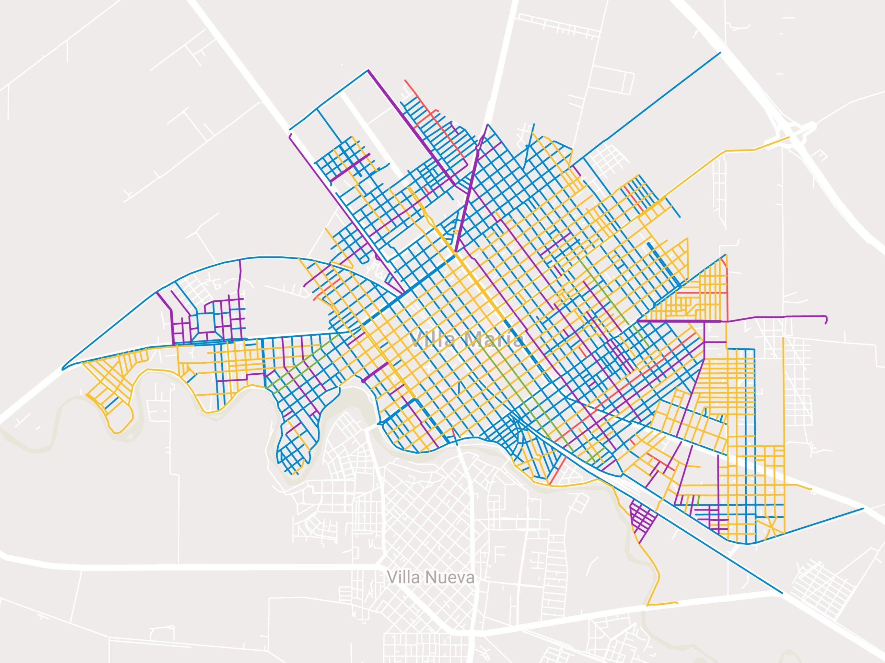
Un análisis sobre poder, género y nomenclatura urbana.
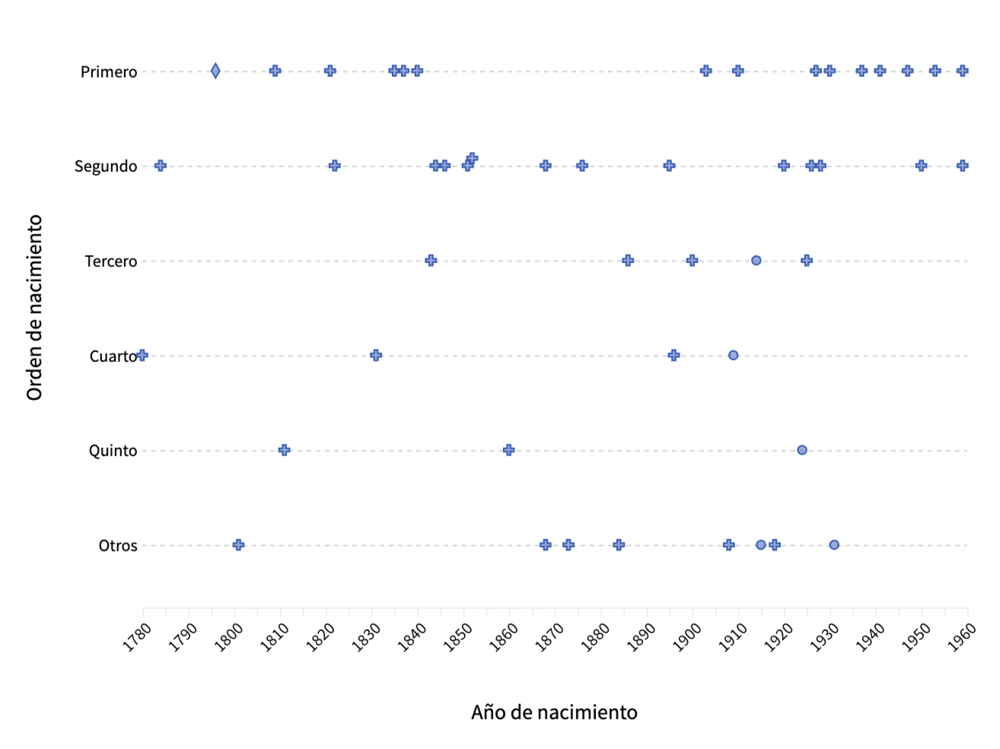
La Teoría del Orden de Nacimiento y los presidentes argentinos
La geopolítica de las hamburguesas en código binario
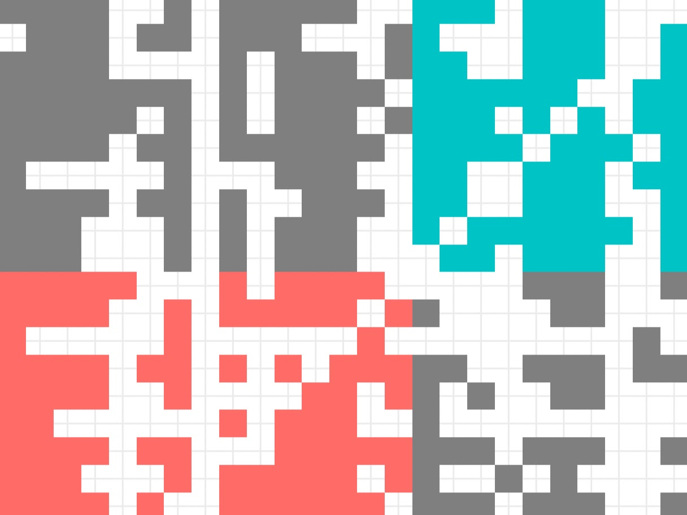
¿Qué nos dicen las cuentas de Twitter de los políticos?
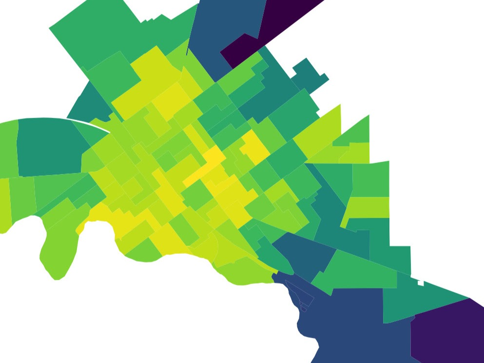
Breve análisis sobre el “radio recreativo” de la cuarentena
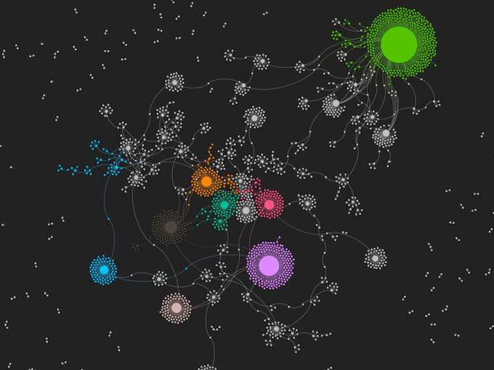
Estudio sobre polarización afectiva en Colombia: audiencias online
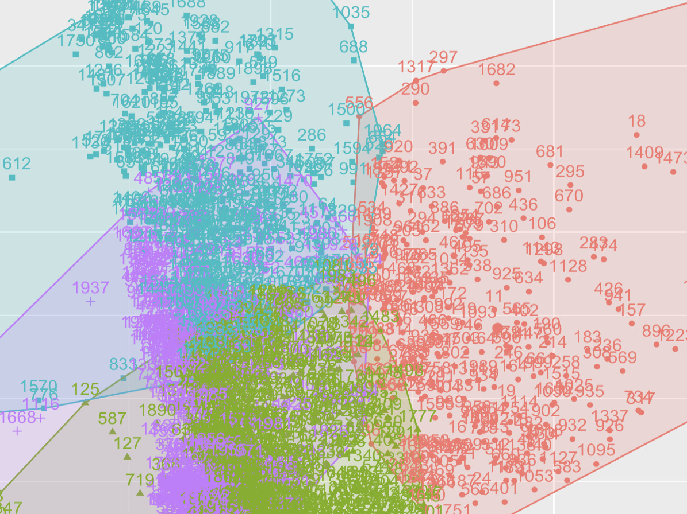
Estudio sobre polarización afectiva en Colombia: audiencias offline
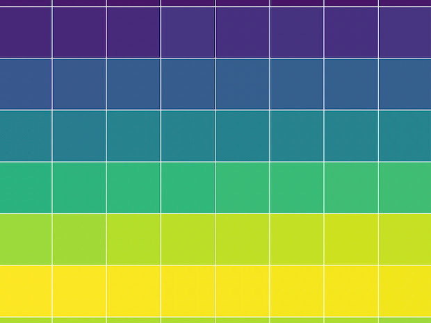
Análisis de datos del Embalse de Río Tercero, Córdoba (AR)
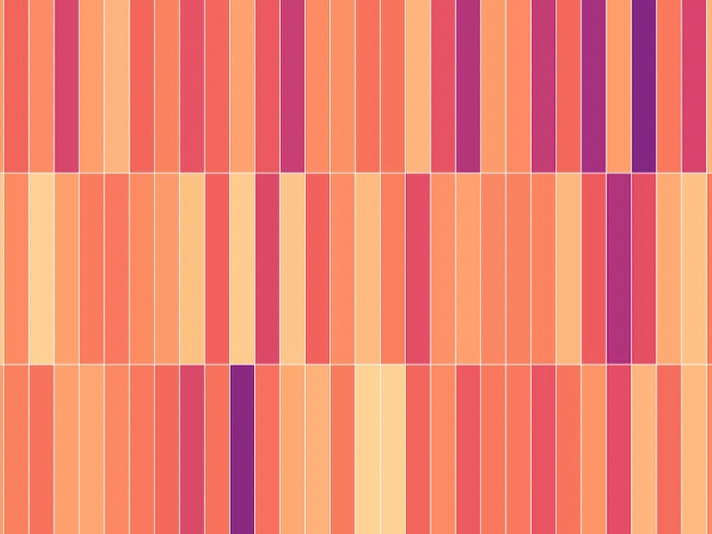
Precipitaciones en la cuenca alta del Río Tercero, Córdoba (AR)
El Calendario Juche meets Python
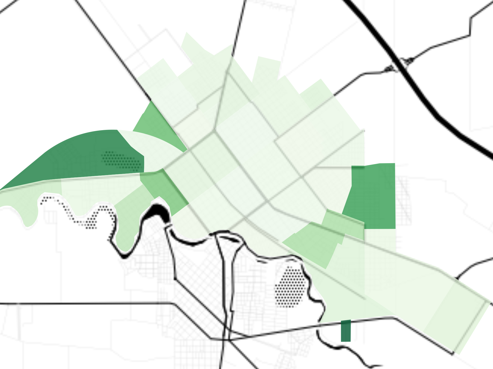
Mapeo de espacios verdes en Villa María, Córdoba (AR)
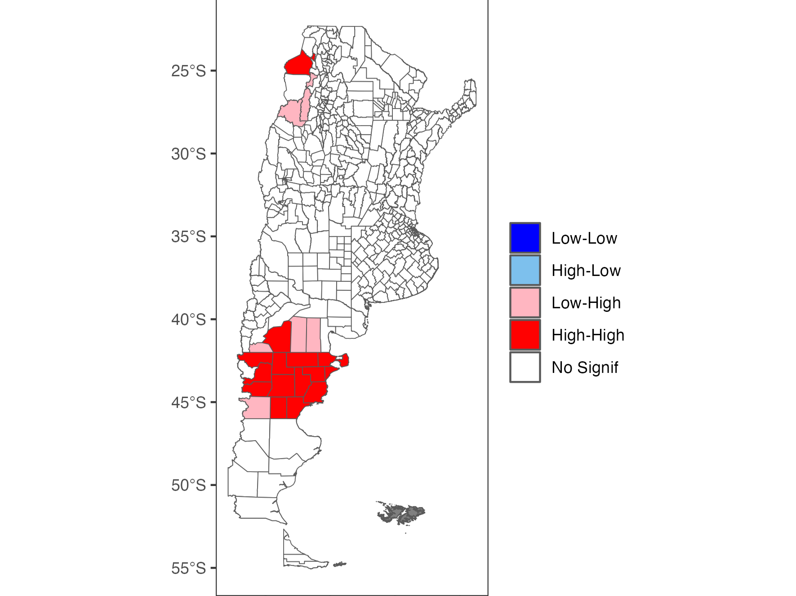
Análisis geoestadístico de protestas sociales en Argentina
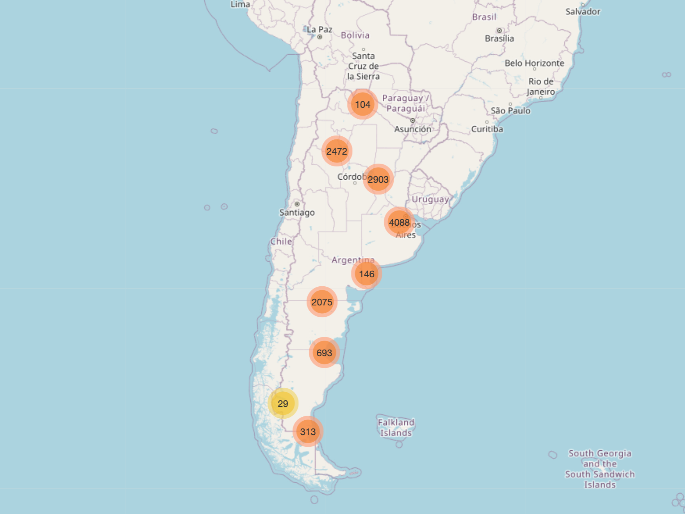
Shiny App con datos de ACLED
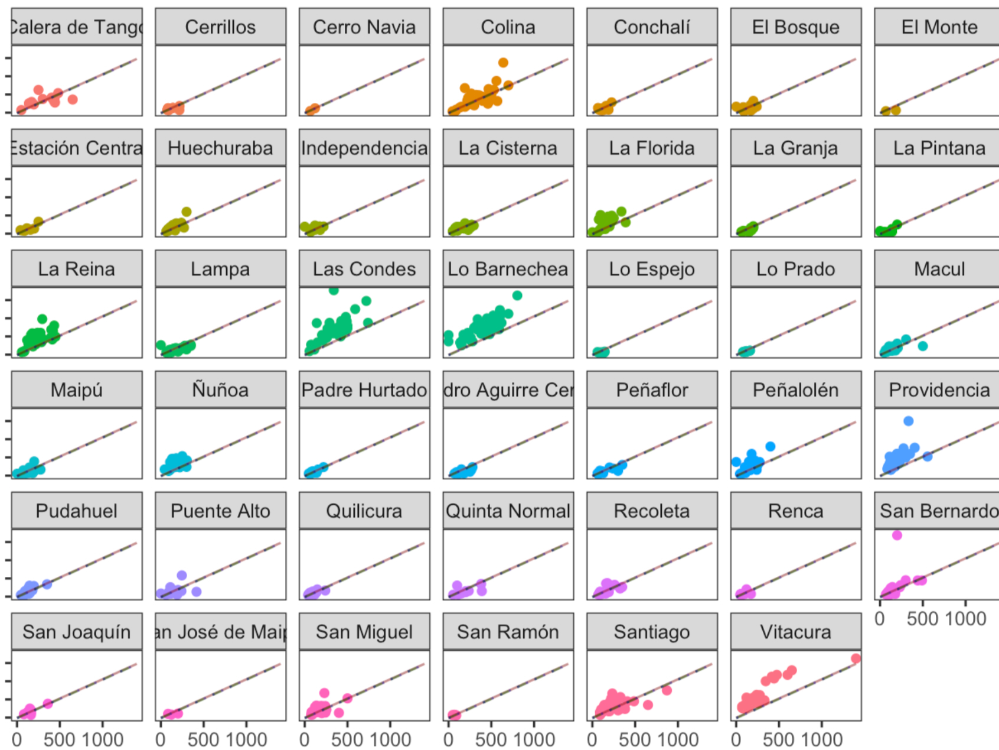
Modelos de regresión para analizar precios de propiedades en Chile

What 1,238 headlines reveal about the cult of Kim Jong Un
Mensajes proletarios impresos en papel térmico
Análisis de datos y pronósticos para la rosca vaticana 2025
La dinámica semanal de la protesta social en Argentina
Charlas, clases y presentaciones
¿Preguntas o comentarios?